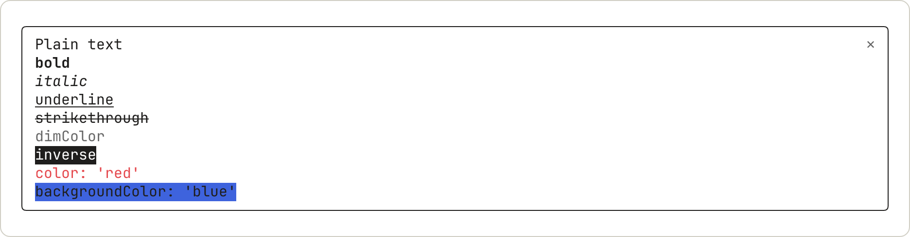
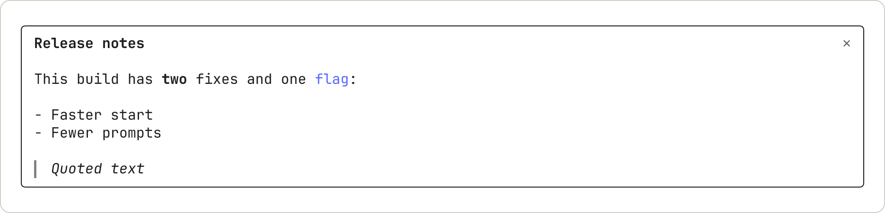
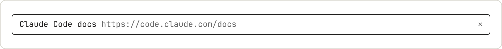
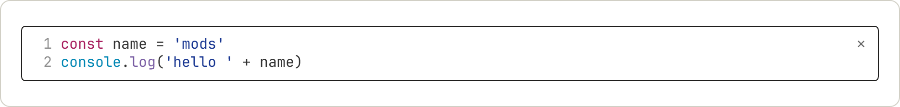
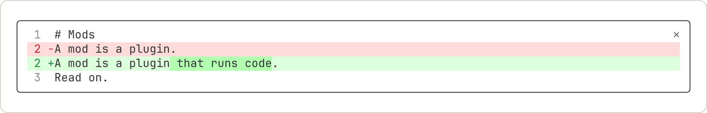
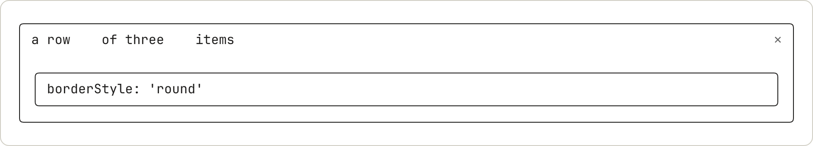
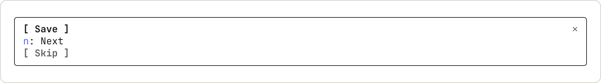
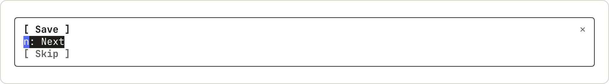
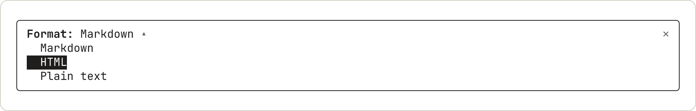
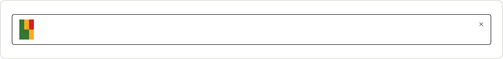

mod 界面元素图库
查看 Claude Code mod 可以绘制的界面元素，例如文本、按钮、输入框、Markdown、代码和 diff，并附有示例代码和终端截图。
mod 通过元素来绘制界面：文本、框、按钮、输入框，以及几个可为您格式化内容的元素。本页的示例展示了绘制各元素的代码，其中大多数还附有结果在终端窗格中的截图，方便您根据外观来挑选元素。
要了解绘制的工作原理，请从在界面中绘制开始。有关主要 props 以及哪些应用会绘制各个元素，请参阅元素参考。类型声明列出了所有 props。
试用示例
本页的示例是代码片段，而非完整的 mod。每个示例都是一个元素及其内部嵌套内容的代码。
要在您自己的终端中查看示例，请按以下步骤创建一个小型 mod，并将示例粘贴进去。该 mod 会添加一个 /gallery 命令，用于打开一个窗格并在其中绘制示例。窗格在宽屏全屏终端中是会话记录旁边的侧边栏，在其他情况下则是输入框上方带边框的区域。
1. 创建 mod
创建一个名为 gallery 的目录，并在其中创建 .claude-plugin 和 hooks 目录。创建 mod 介绍了这些文件。
将清单保存为 gallery/.claude-plugin/plugin.json：
{
"name": "gallery",
"version": "0.1.0",
"description": "Opens a pane that draws one sample",
"author": { "name": "Your Name" }
}
在 gallery/hooks/hooks.json 中指定入口文件：
{
"modules": ["./register.js"]
}
将代码保存为 gallery/hooks/register.js。它会添加一个打开窗格的 /gallery 命令，并在该窗格中绘制 Plain text：
// Stands in for your own callback in the samples that take one
const noop = () => {}
// The Select sample keeps its choice here
let picked = 'md'
// The Raster sample packs its cells with this function
const DEFAULT_COLOR = 0x01000000
function cellsOf(rows) {
const numbers = rows.flat().flatMap(([char, color]) => [char.codePointAt(0), color, DEFAULT_COLOR])
return new Uint8Array(Uint32Array.from(numbers).buffer).toBase64()
}
export function register(on) {
on('session.start', async ($, e, next) => {
await $.command.register({ name: 'gallery', description: 'Open the sample pane' })
return next(e)
})
on('command.run', { command: 'gallery' }, async ($) => {
await $.ui.open({ id: 'gallery', focus: true, closeOnEscape: true })
return {}
})
on('ui.render', { component: 'Pane' }, async ($, e, next) => {
if (e.requestId !== 'gallery') return next(e)
const { Box, Text, Button, Input, Select, Link, Markdown, Code, Raster, Svg } = $.ui.resolve(e)
// Replace the element after return with a sample
return Text({ children: ['Plain text'] })
})
}
2. 运行 mod
在 shell 中，从包含 gallery 的目录启动 Claude Code：
claude --plugin-dir ./gallery
在 Claude Code 输入框中运行 /gallery。一个窗格随即打开，其中显示 Plain text。
3. 替换为示例
从本页复制一个示例。在 register.js 中，将其粘贴以替换 Text({ children: ['Plain text'] })，使其位于 return 之后，然后保存文件。每次保存时 Claude Code 都会重新加载该模块，因此再次运行 /gallery 即可查看新示例。
选择元素
示例按您想在屏幕上显示的内容分组：
- 显示文本：
Text、Markdown和Link - 显示代码和更改：
Code - 排列元素：
Box - 接收输入：
Button、Input和Select - 绘制图形：
Raster、Svg、Image和Client
显示文本
有三个元素可在屏幕上显示文字：Text 用于自定义样式，Markdown 用于已格式化的内容，Link 用于 URL。
Text
Text 使用您指定的样式绘制字符串。此示例显示纯文本和八种样式，每行一种：
Box({
flexDirection: 'column',
children: [
Text({ children: ['Plain text'] }),
Text({ bold: true, children: ['bold'] }),
Text({ italic: true, children: ['italic'] }),
Text({ underline: true, children: ['underline'] }),
Text({ strikethrough: true, children: ['strikethrough'] }),
Text({ dimColor: true, children: ['dimColor'] }),
Text({ inverse: true, children: ['inverse'] }),
Text({ color: 'red', children: ["color: 'red'"] }),
Text({ backgroundColor: 'blue', children: ["backgroundColor: 'blue'"] }),
],
})

dimColor 以灰色绘制文本。backgroundColor 的填充宽度仅与文本相同。
Markdown
Markdown 按照 Claude 回复的格式来格式化文本。请通过 text 而非 children 传入内容：
Markdown({
text: '## Release notes\n\nThis build has **two** fixes and one `flag`:\n\n- Faster start\n- Fewer prompts\n\n> Quoted text',
})

标题以粗体绘制，不显示其 # 标记。行内代码以彩色绘制，不显示反引号。引用以斜体绘制，左侧带一条竖线。
Link
Link 绘制一个标签，后跟其 URL：
Link({ href: 'https://code.claude.com/docs', label: 'Claude Code docs' })

终端将 URL 作为文本绘制在标签之后。点击能否打开它取决于用户的终端。
显示代码和更改
Code 使用 Claude Code 自己的语法配色绘制源代码文本或 diff。在 VS Code 扩展中，Code 将其 source 显示为纯文本，不带这些截图中的配色、行号或 diff 底纹。
Code
指定 language，或传入 path 让 Claude Code 据此推断语言。使用 startLine 时，行号从该数字开始：
Code({
language: 'javascript',
startLine: 1,
source: "const name = 'mods'\nconsole.log('hello ' + name)",
})

颜色来自用户的主题。
以 diff 形式使用 Code
使用 format: 'diff' 时，source 是一个或多个 unified diff hunk：
Code({
format: 'diff',
source: '@@ -1,3 +1,3 @@\n # Mods\n-A mod is a plugin.\n+A mod is a plugin that runs code.\n Read on.',
})

Claude Code 用行号代替 @@ 行进行绘制。当删除的行与添加的行相似时，发生变化的词会以更深的底纹显示。
排列元素
Box
Box 将其内部内容按行或列排布，并可绘制边框。此示例在一个带边框的框上方放置了一行文字：
Box({
flexDirection: 'column',
gap: 1,
children: [
Box({
flexDirection: 'row',
columnGap: 4,
children: [Text({ children: ['a row'] }), Text({ children: ['of three'] }), Text({ children: ['items'] })],
}),
Box({
borderStyle: 'round',
paddingX: 1,
children: [Text({ children: ["borderStyle: 'round'"] })],
}),
],
})

边框会延展至窗格的宽度。
接收输入
Button、Input 和 Select 是控件：用户通过 Tab 键在它们之间移动，并操作获得焦点的那个控件。键盘焦点和快捷键介绍了哪些按键会传递给它们。
使用 focus: true 打开窗格可为该窗格请求键盘焦点。Input 获得焦点后即可接收键入的字母。要选择窗格打开时哪个输入框获得焦点，请参阅设置快捷键和初始焦点。
Button
按钮会运行 onPress。此示例展示了默认形式、带快捷键的 plain 按钮，以及一个暗淡的按钮：
Box({
flexDirection: 'column',
children: [
Button({ key: 'save', label: 'Save', onPress: noop }),
Button({ key: 'next', label: 'Next', hotkey: 'n', plain: true, onPress: noop }),
Button({ key: 'skip', label: 'Skip', dimColor: true, onPress: noop }),
],
})

获得焦点的按钮以反色绘制。此处用户已按了两次 Tab：

Input
Input 是文本输入框，默认只容纳一行，用户按 Enter 时会运行 onSubmit：
Input({
key: 'title',
label: 'Title',
placeholder: 'Type a title and press Enter',
value: '',
submitLabel: 'save',
onSubmit: noop,
})
未获得焦点时，输入框显示其标签和占位文本：
获得焦点后，标签变为粗体，出现光标，并在 ⏎ 之后显示 submitLabel：
键入内容会替换占位文本：
如需容纳多行内容的输入框（例如备注或提交信息），请将 rows 设置为 2 或更大的值：
Input({
key: 'note',
label: 'Note',
placeholder: 'Write a note',
rows: 4,
onSubmit: noop,
})
终端和桌面应用会绘制多行。在 VS Code 扩展中，输入框只容纳一行。rows 需要 Claude Code v2.1.301 或更高版本。在更早的版本中，输入框只容纳一行。
即使输入框为空，它也会占据您设置的行数，最多不超过其所在窗格或区域的高度。输入框获得焦点时，更长的文本会在输入框内滚动。
- 在终端中，Enter 仍然用于提交。在终端中，用户可以先键入反斜杠再按 Enter 来换行，或者在终端模拟器支持的情况下按 Shift+Enter。这些按键与提示词输入框中的按键相同。
- 在终端中，上方向键和下方向键用于在输入框的各行之间移动。在第一行和最后一行时，它们会移动到前一个或后一个控件。
onSubmit和onInput接收完整文本，其各行以\n连接。
Select
Select 让用户从多个选项中选择一个，并以该选项的 value 运行 onSelect：
Select({
key: 'format',
label: 'Format',
value: picked,
options: [
{ value: 'md', label: 'Markdown' },
{ value: 'html', label: 'HTML' },
{ value: 'txt', label: 'Plain text' },
],
onSelect: (value) => {
picked = value
},
})
收起时，它显示其标签和当前选项：
展开时，它列出所有选项并标记其中一个：

用户选择一个选项后，列表会收起：
绘制图形
Raster
Raster 是由彩色字符单元格组成的网格，可用于热力图、迷你折线图或游戏棋盘。由终端负责绘制。此示例使用了起始模块中的 cellsOf 函数，该函数会将单元格打包成 Raster 所需的字符串。绘制彩色单元格网格对此进行了说明：
Raster({
key: 'grid',
columns: 3,
rows: 2,
cells: cellsOf([
[['█', 0x2e7d32], ['█', 0xf9a825], ['█', 0xc62828]],
[['█', 0x2e7d32], ['█', 0x2e7d32], ['█', 0xf9a825]],
]),
})

Raster 会将每种颜色近似到一个较小的调色板，因此 0x2e7d32 会绘制为 #337733。
Svg
Svg 在 Desktop 应用和 VS Code 扩展中绘制 SVG 文档：
Svg({
alt: 'Three bars of rising height',
width: 120,
height: 60,
source:
'<svg xmlns="http://www.w3.org/2000/svg" viewBox="0 0 120 60"><rect x="10" y="40" width="20" height="20" fill="#2e7d32"/><rect x="50" y="25" width="20" height="35" fill="#f9a825"/><rect x="90" y="5" width="20" height="55" fill="#c62828"/></svg>',
})
在终端中，仅返回 Svg 的窗格打开后是空的。要在那里绘制其他内容，请检查 e.surface 并返回不同的元素树。
Image 和 Client
另有两个元素在此没有示例。Image 在终端中绘制 PNG 或原始像素。Client 是由您的另一个文件负责绘制的区域，用于动画和指针输入。元素参考列出了它们的 props。
在以下终端中，Image 会绘制为图片：
- kitty 0.28 或更高版本
- Ghostty
- iTerm2 3.5 或更高版本。在 iTerm2 中绘制需要 Claude Code v2.1.305 或更高版本。
在其他任何终端中，用户看到的将是以暗色显示的 Image 的 alt 文本，而不是图片。请编写能够独立表达含义的 alt 文本，因为在以下情况（以及其他一些情况）下也会显示该文本：
- GNU screen：在任何终端中运行于 screen 内的会话。
- tmux：运行于 tmux 内、但未满足某项在 tmux 中绘制的要求的会话。
- 后台会话：每个后台会话，无论从哪个终端连接。
- iTerm2 未使用全屏渲染：在 iTerm2 中，图片仅在全屏渲染下绘制，并且在
CLAUDE_CODE_ALT_SCREEN_FULL_REPAINT设置为1时不会绘制。要看到图片，请在 Claude Code 输入框中运行/tui fullscreen，并保持该变量未设置。 - iTerm2 或 tmux 中的文件路径来源：在 iTerm2 中以及在 tmux 内，
source指定file的Image会显示alt文本而不是图片。如果您的 mod 有 iTerm2 或 tmux 用户，请在source.png或source.rgba中以 base64 形式传递图片，而不是在source.file中以路径形式传递。
如果您的 mod 的用户在能够绘制使用 Unicode 占位符的 kitty 图形协议图像的终端中看到了暗色文本，可以将 CLAUDE_CODE_FORCE_TERMINAL_IMAGES 设置为 1。不应在以下情况下设置该变量：在 GNU screen 内、在低于 3.3 版本的 tmux 内、在 tmux 弹出窗口中，或在 tmux 的 allow-passthrough 关闭时。在这些情况下，用户看不到图片，并且 alt 文本的位置会显示一个方框。
在 tmux 中绘制 Image
如果 Image 在 tmux 中显示其 alt 文本，请检查以下要求，同时检查其他显示 alt 文本的情况，例如后台会话：
- Claude Code v2.1.310 或更高版本
- tmux 3.3 或更高版本
- Claude Code 运行在 tmux 窗格中，而不是 tmux 弹出窗口中
- tmux 运行在 kitty 0.28 或更高版本、Ghostty 或 iTerm2 3.5 或更高版本中
- tmux 选项
focus-events和allow-passthrough为on。在 kitty 或 Ghostty 中，allow-passthrough也可以为all。 - 在 iTerm2 中，tmux 不使用
-CC运行，全屏渲染已开启，并且CLAUDE_CODE_ALT_SCREEN_FULL_REPAINT未设置。 - 在 iTerm2 中，tmux 窗口不大于 iTerm2 窗口。要进行检查，请在该 tmux 窗口中运行
tmux display-message -p '#{window_bigger}'。如果输出1，请调整 tmux 窗口使其适配，然后重启 Claude Code。 - mod 的作者以
png或rgba字节形式传递图片，而不是以file路径形式传递。如果您使用的 mod 并非由您编写，且其他要求均已满足，请让其作者检查这一项。
对于每个尚未按要求设置的 tmux 选项，请在 shell 中运行其对应命令：
tmux set -g allow-passthrough on
tmux set -g focus-events on
然后从 tmux 分离，重新连接，并重启 Claude Code。每当您从不同的终端连接 tmux 时，请再次重启 Claude Code。要在 tmux 服务器重启后保留这两个选项，还请将这两行添加到 ~/.tmux.conf。
了解 mod 可以在哪里绘制
这些示例都在窗格中绘制。mod 还可以在其他位置绘制，并可调用 Claude Code 为其显示内容：
- 窗格和横条：选择绘制位置
- Claude Code 自身的行，例如加载动画：更改 Claude Code 已绘制的内容
- Toast 通知、状态栏和日志行：在不开启轮次的情况下显示内容
- 问题对话框：暂停工具调用直到用户做出决定